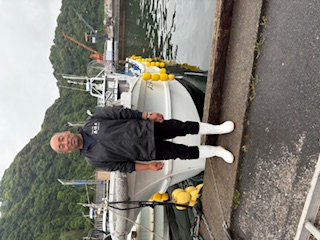

船長紹介
経験豊富で温厚な北村船長がご案内いたします。初心者からベテランまで安心して釣りをお楽しみいただけます。
船内・設備紹介
対象魚種
マダイ、イサキ、アマダイ、青物、回遊魚、大物など（季節により変動）
出港エリア
出発港：鹿児島・山川港｜釣りエリア：錦江湾口、離島周辺
料金表
| コース名 | 時間 | 料金（1人） |
|---|---|---|
| 近海五目釣り | 約6時間 | 9,000円 |
| 深場五目釣り | 約8時間 | 11,000円 |
| チャーター（平日） | 応相談 | 80,000円〜 |
| チャーター（休日） | 応相談 | 90,000円〜 |
※支払い方法：現金のみ
※天候により出船時間は変動します。